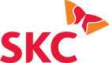
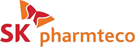
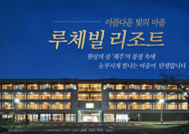

- Home
- 자회사 소개
자회사 소개
상장 자회사
-
SK머티리얼즈
SK머티리얼즈는 첨단 IT 소재용 특수가스의 불모지였던 한국에서 삼불화질소(NF3)의 첫 국산화를 시작으로 육불화텅스텐(WF6), 모노실란(SiH4), 다이실란(Si2H6) 등 특수가스 분야의 Global No.1으로 자리매김 했을 뿐만 아니라, 산업가스 및 반도체 프리커서 소재, 식각가스 분야에서도 사업기반을 확장하며 Gas & IT Total Solution Provider로 성장하고 있습니다.
-
SK이노베이션
SK이노베이션은 석유 한 방울 나지 않는 대한민국을 에너지 강국으로 만들기 위해 열심히 달려왔습니다. 1962년 대한민국 최초의 정유회사로 출발한 SK이노베이션은 지난 반세기 우리나라의 에너지∙화학 대표기업으로서 국가 경제발전에 앞장서왔습니다. 새로운 반세기를 향해 가고 있는 SK이노베이션은 글로벌 일류 에너지∙화학기업으로 도약하기 위해 도전과 혁신을 멈추지 않을 것입니다.
-
SK텔레콤
SK텔레콤은 1996년 CDMA 세계 최초 상용화를 시작으로 2013년 세계 최초 LTE-A 상용화,2019년 세계 최초 5G 상용화 등 대한민국 이동통신 산업 발전의 중심에 서 있습니다. SK텔레콤은 넓은 커버리지와 빠른 속도, 완벽한 보안으로 세계 최초 5G 상용화라는 통신의 진화를 이끈 힘을 바탕으로 기존 한계를 뛰어넘는 ‘초(超)혁신’을 통해 고객 여러분의 삶의 질을 높이고 대한민국 산업이 발전할 수 있는 변화의 촉매제가 되고자 합니다.
-
SK E&S
SK E&S는 1999년 도시가스 사업 지주회사로 출범하여 현재 LNG, 전력, 집단에너지, 신재생에너지, 그리고 해외 에너지 사업까지 영역을 확장하여 수행하고 있습니다. SK E&S는 천연가스발전소를 운영하여 전력을 공급하고 있으며, 경쟁력 있는 LNG를 도입함으로써 국가 전력 수급에 기여하고 있습니다. Global Clean Energy & Solution Provider를 목표로 국내 뿐만 아니라 해외사업을 활발히 추진하고 있습니다.
설립일 : 1999년 1월 13일
기업 홈페이지 : www.skens.com
-
SKC
SKC는 필름 및 화학 소재산업 선도기업(Leading Company)으로서 앞선 기술 역량과 노하우를 바탕으로 고부가가치 신규사업 진출 및 해외 시장 확대를 이뤄내고 미래 성장동력을 확보하겠습니다. 나아가 신성장 사업분야에서 고부가·고기능 스페셜티(Specialty) 제품을 생산하는 세계 최고 수준의 첨단소재 전문기업으로 도약할 것입니다.
-
SK네트웍스
SK그룹의 모태인 선경직물로 출범한 SK네트웍스는 국내외 네트워크와 우량 거래선, 우수한 물류 능력 등의 경쟁력을 바탕으로 다양한 사업을 전개하고 있습니다. 특히 4차 산업혁명 속에서 각광받고 있는 렌탈 비즈니스의 성장을 가속화 하는 동시에, 해외시장 개척 경험과 노하우를 기반으로 한 글로벌 진출을 통해 수익력과 성장력을 제고하도록 하겠습니다.
비상장 자회사
-
SK건설
SK건설은 인프라분야에서 도로, 철도, 항만 등의 국가기간산업 건설과 건축/주택분야에서의 프리미엄 주거공간의 창출 및 대형 개발사업 등의 참여로 국내외에서의 입지를 굳건히 하고 있습니다. 또한, 플랜트분야에서는 지구촌 곳곳에서 대형 석유화학 및 발전, 반도체 시설 등 다양한 프로젝트 수주와 성공적인 시공을 통하여 세계적인 업체들과 어깨를 나란히 하는 Global Player로서 업계를 선도해 가고 있습니다.
설립일 : 1962년 2월 21일
기업 홈페이지 : www.skec.co.kr
-
SK실트론
SK실트론은 국내 유일의 반도체 웨이퍼 전문 제조기업으로 35년 이상 반도체 산업의 발전과 그 역사를 함께하며 성장해 왔습니다. 오랜 양산 경험과 축적된 역량을 기반으로 선제적 증설과 제조·기술경쟁력의 지속적인 강화를 추진하는 한편, 신성장 사업인 SiC 웨이퍼 사업 진출 등 사업 포트폴리오 확장을 통해 양적 규모와 수익성을 동시에 갖춘 Global 최고의 반도체 소재 기업으로 나아갈 기반을 확고히 하고 있습니다.
설립일 : 1983년 4월 25일
기업 홈페이지 : www.sksiltron.com
-
SK바이오팜
SK바이오팜은 글로벌 종합제약사로서의 경쟁력을 갖추기 위해 현재 한국과 미국, 중국에 법인을 두고 운영하고 있습니다. 글로벌 시장을 타겟으로 혁신 신약 개발에 앞장서 왔으며, 앞으로 신약 상업화 등의 성과를 통해 신약 후보 물질 탐색부터 출시 이후 마케팅에 이르는 전 과정을 아우르는 글로벌 종합 제약사(FIPCO: Fully Integrated Pharma Company)로의 도약을 목표로 하고 있습니다.
설립일 : 2011년 4월 1일
기업 홈페이지 : www.skbp.com
-
SK Pharmteco
-
SK임업
SK임업은 산림사업을 통한 장학사업의 장기적인 재원을 확보하고 국가의 산림녹화에 기여하고자 지난 40년간 충주, 천안, 영동 등 총 4천여ha의 조림지를 조성하였고, 이에 조림 및 육림사업 발전과 산림자원화에 노력한 공로가 인정되었습니다. 특히 충주, 천안, 영동 조림지는 특용활엽수 단지에 의한 국내 유일의 산림청 지정 ‘특수산림사업지구’로서 기업임업의 중추적 역할을 하고 있습니다.
설립일 : 2009년 4월 30일
기업 홈페이지 : www.skforest.com
-
휘찬